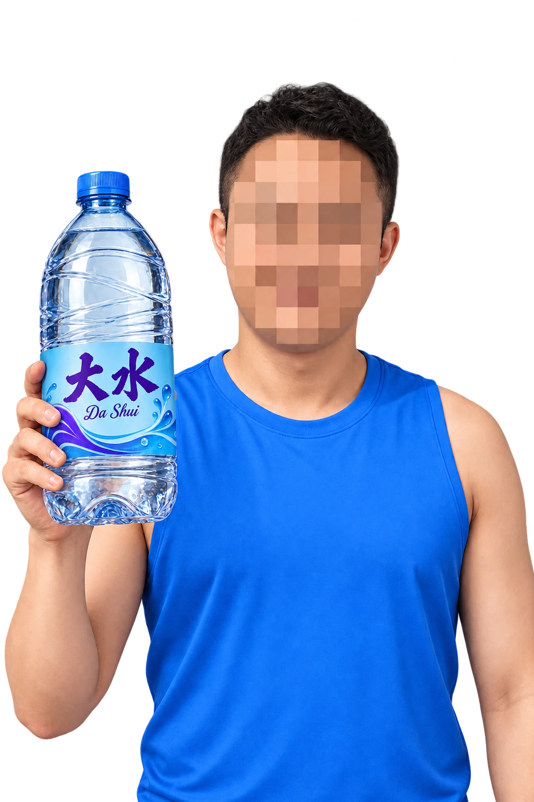

孙哥原话与原创玩梗分开标注。点击水瓶慢慢捞。
这是一个以孙宇晨相关网络文化为灵感的非官方互动玩梗网页。人物为 AI 二创，整张脸以马赛克遮挡；衣服无商标，水瓶使用虚构玩梗名字「大水」，不代表真人或任何真实品牌的代言。
标有「孙哥原话」的文字为公开采访或报道节选，提供语境和出处；其他文案为原创玩梗，不是真人发言。思维测试是本站原创娱乐题目。
点击或拖动水瓶、按住按钮或空格键召唤大水。你的收藏、喝水记录和测试结果只保存在当前浏览器，不会跨设备同步。
公开采访与报道中的短句节选；保留语境。香蕉那句为报道所载中文译文。
按实际饮水记录，不用追数字。与首屏的玩梗大水值分开计算。
目标由你自己设定，不是饮水建议。留空保存可取消目标。
日期按北京时间计算。数据保存在当前浏览器，不会上传或跨设备同步。
6 道生活情境题，看看你的省钱、执行和独立判断风格。原创娱乐测试，不是心理测评或孙宇晨本人设计。